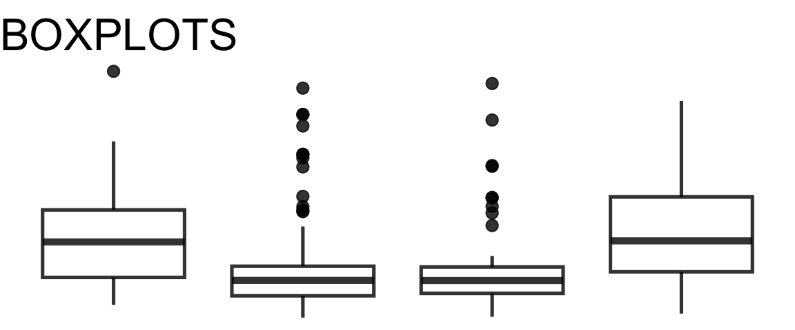
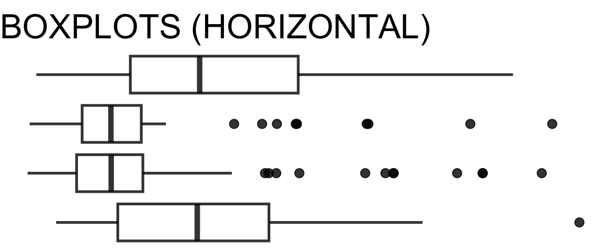
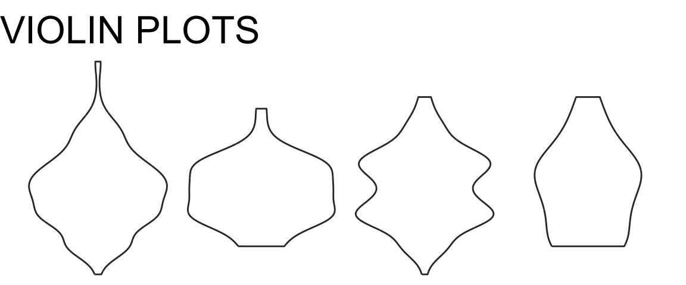
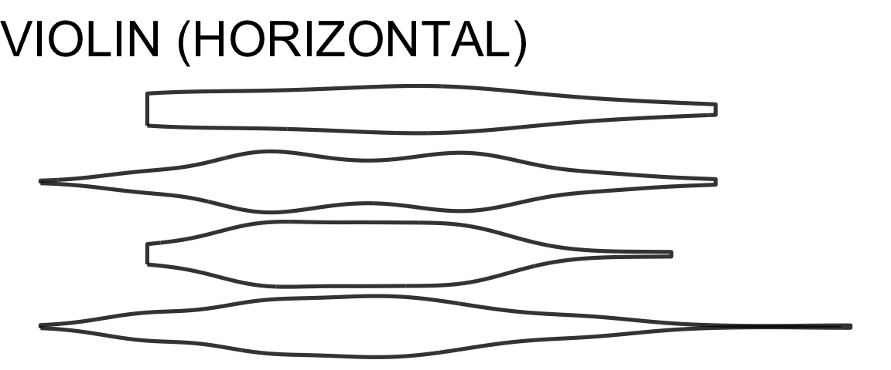
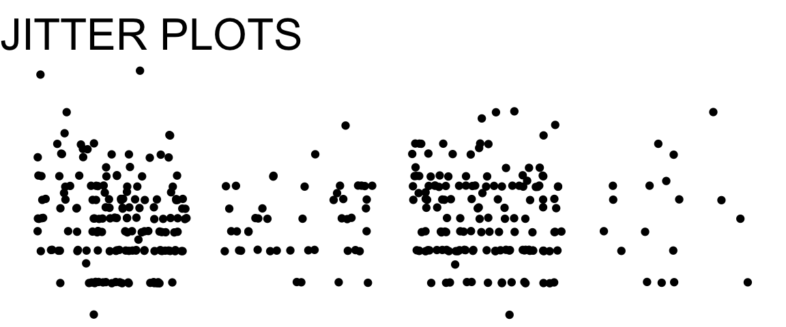
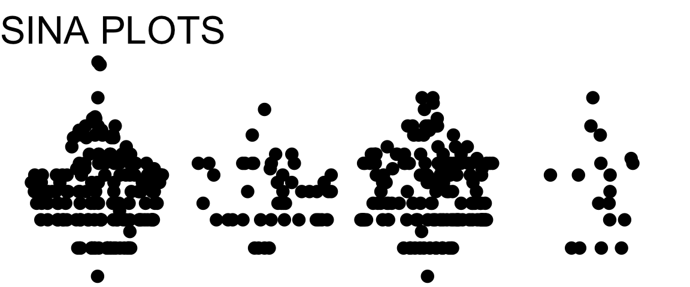
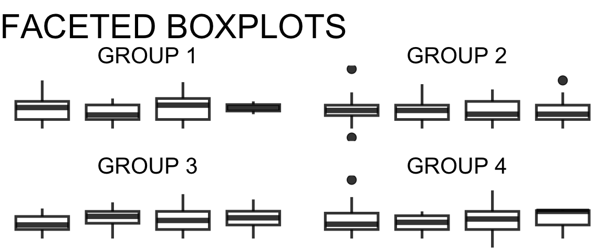

15 Gallery: Mixed Quantitative + Categorical
15.1 Distribution by Groups
There are several plots designed specifically to look at the distribution of a quantitative variable, grouped by a categorical variable.
Boxplots

- The boxplot shows a summary of the distribution. The box spans the middle half of the data, with the line marking the median. The “whisker” lines extend to cover the range of “most of” the data, with outliers shown individually
- For details, check out this optional explanation of how boxplots are constructed from Introduction to Modern Statistics by Mine Çetinkaya-Rundel and Johanna Hardin.
- If your dataset is too small to estimate the median and quartiles of the data accurately, consider showing all the observations (for example, using or overlaying a jitter plot)
Violin Plots


- These show a mirrored density plot for each group
- As for density plots, make sure you have a large enough dataset so that the bumps in the density curve don’t represent just one or a couple of observations
Jitter Plots

- These show all the points in every category, “jittered” (moved slightly away from the category axis) to reduce overplotting
- If the dataset is too large, overplotting may still be a big problem
- Jitter plots are often used as an additional layer on top of boxplots or violin plots to make the size of the dataset, and the locations of individual datapoints, more visible
Sina Plots

- These show all the points in every category, arranged so that the width of the point cloud corresponds to the density of observations
- If the dataset is too large, overplotting may become an issue
- A sina plot is a bit of a hybrid between a violin plot and a jitter plot; or, a more organized, less random version of a jitter plot.
15.2 Facets?
You can also consider making multi-panel plots with one histogram, density plot, or dotplot per facet, but comparing between facets is usually harder than comparing boxplots or violin plots on a single axis.
Multi-facet plots can show one panel per group, for any kind of plot seen so far: a bar graph for each group, a stacked bar for each group, a scatterplot for each group, a set of boxplots for each group, etc. etc.

Check Your Understanding: Quant. + Cat.
There are some errors and inconsistencies in the chart below!
Check it out – can you find them?